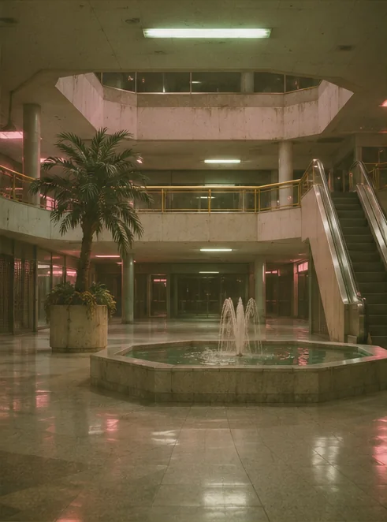

Visitor record
The electronics storefront retains a copy of each visit. When a visitor returns to the storefront, the middle television replays the earlier route. In later copies, the visitor stops and looks into the store, even when the visitor remembers walking past.
Investigators reached the electronics storefront again by taking the atrium escalator. From the service corridor they reported hearing the fountain through a closed door.
Recording recovered on site · Interloper, Aeris Mandrake
Enter the mall →